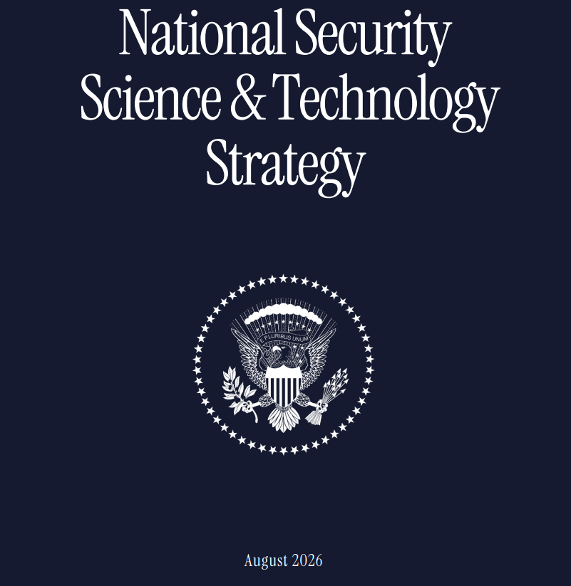
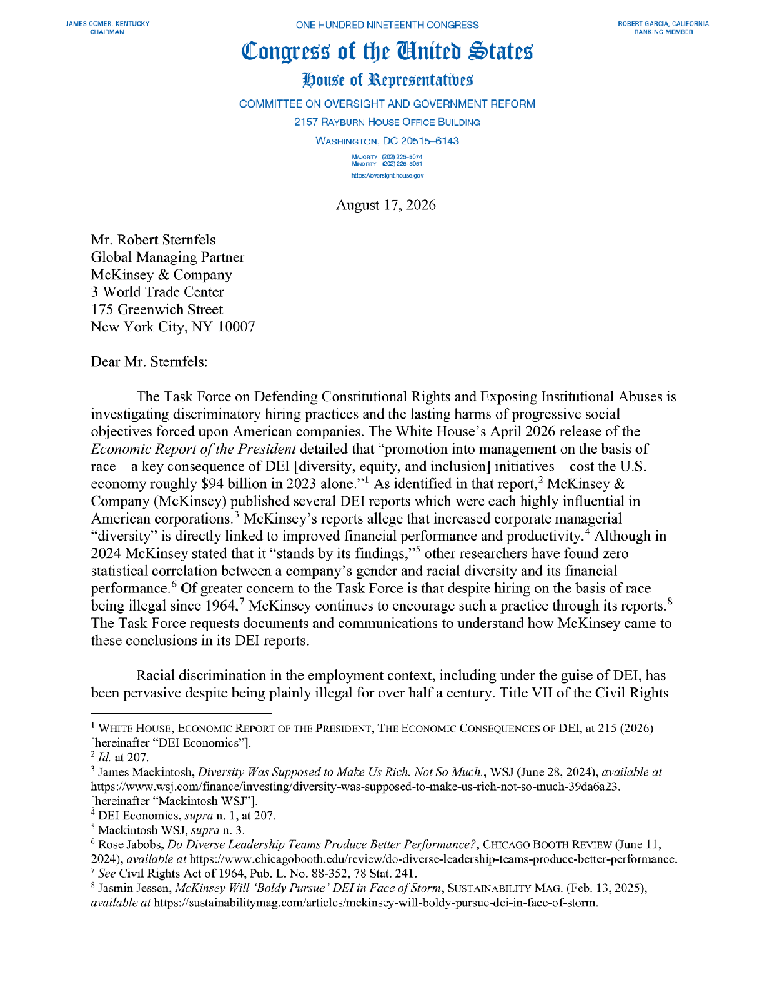
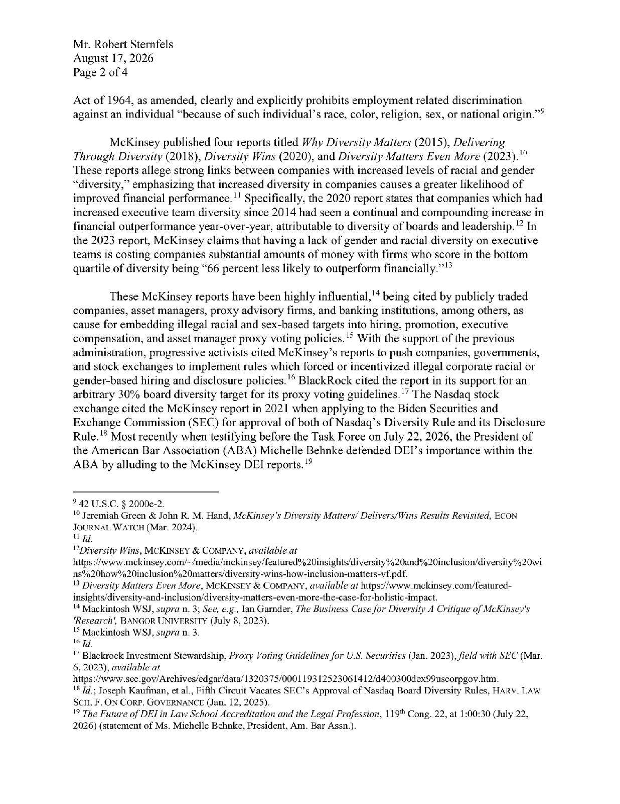
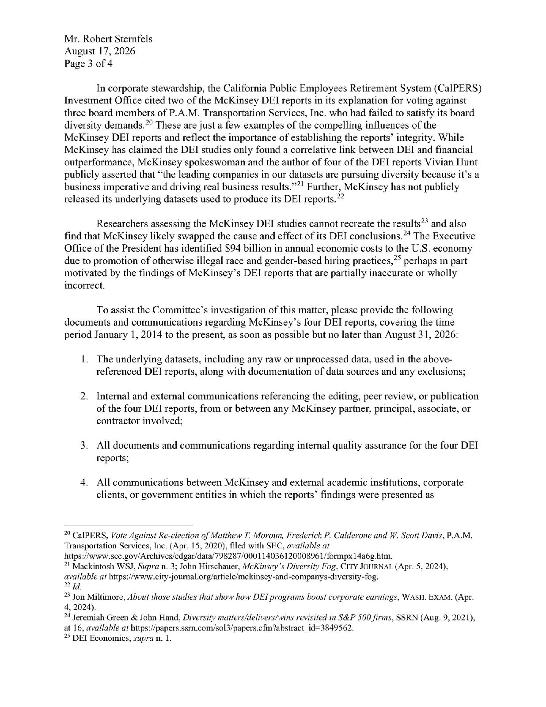
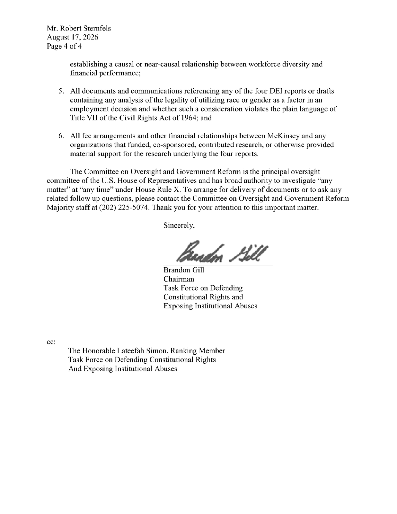

The White House has confirmed to Politico that the AI summit will take place on September 24th.
OpenAI has entered into an agreement to utilize capacity at the PORTS-Pike Technology Data Center in Pike County, Ohio, working with SB Energy, NVIDIA, and the U.S. Department of Energy.
Pike County helped power American industry in the last century. Here’s how we’ll ensure this project becomes a catalyst for future jobs, investment, and long-term opportunity in Southern Ohio.
- SB Energy will pay the full cost of all grid upgrades and new transmission lines needed to serve the data center so the costs aren’t shifted to Ohio or other ratepayers in the region. - This data center will use closed-loop, air-cooled cooling systems that recirculate water rather than relying on cooling towers that continuously consume water. It is expected to use significantly less water than was historically used by the Portsmouth gaseous diffusion plant. - The project is expected to create 35,000 construction jobs during its six-year buildout through 2032 and 2,500 long-term operating jobs, with a focus on local workers, contractors, suppliers, trades, and service providers. - We will enable an initial combined community investment of $80 million: $40 million from OpenAI for priorities defined by the local community alongside SB Energy’s existing $40 million commitment. The project is also expected to generate hundreds of millions of dollars in state and local tax revenue over its lifetime, with local property taxes primarily supporting public schools. - OpenAI will make up to $84 million in Codex credits available to approximately 844,000 eligible Ohio college, community college, and technical school students aged 18 and older during the 2026–2027 academic year. - Each year, we will publish a report on our progress, and local input will help shape the Ohio Community Compact.
The future of transportation is BRIGHT
@MyFDOT’s Suntrax in sunny Florida 🤩
This is first-EVER dedicated facility for both autonomous vehicle and eVTOL testing
And thanks to the Trump Administration, commercial test eVTOL flights will be launching across the sunshine state later this year 👀
It’s all part of our nationwide pilot program to reshape the way people and products move!
Trump administration, US Commerce Dept move to block Apple from using Chinese DRAM suppliers, directing demand toward Micron, the leading US memory producer $DRAM $MU
The Department of War has issued formal notifications to 30 domestic academic institutions, directing them to initiate immediate and comprehensive reviews of their academic, financial and research collaborations with foreign entities of concern.
These notifications address active institutional ties and collaborations with foreign entities identified under Section 1286 of the FY19 NDAA, as well as organizations associated with rebranded Confucius Institutes. Executed by the Office of the Under Secretary of War for Research and Engineering, this action is designed to protect American taxpayer-funded research investments from unauthorized technology transfer, intellectual property theft and adversarial exploitation.
“The Department of War has zero tolerance for academic partnerships that compromise our national security,” said Emil Michael, Under Secretary of War for Research and Engineering. “Institutions that receive funding from American taxpayers must uphold the highest standards of research security, and these mandated audits will ensure accountability across the board.”
To maintain eligibility for future federal research funding, the notified universities must complete a comprehensive audit of all identified foreign collaborations, assess the exposure of sensitive or export-controlled research, and implement strict mitigation plans, including the termination of problematic partnerships. Institutions are required to report their findings and actions directly to the Department no later than August 31, 2026.
“Some students are five to eight years behind in mathematics. Office hours that should be spent discussing integrals instead become lessons on fractions and basic algebra you would expect students to learn in middle school,” wrote Zvezdelina Stankova, of UC Berkeley, in an op-ed piece on Saturday for the San Francisco Standard.
My comment: the one privilege that cannot be repealed is the privilege of being objectively correct. Tests identify those who belong to this group because it is civilization's job to discriminate in favor of truth over error.
Forbes: Trump is now restricting all legal immigration categories.
Half of the world is under travel restrictions. Entry paths are narrower, legalization rarer. From employment to education, processing has stalled. ‘The agenda is focused on the elimination of legal immigration.’
Forbes also alarms that ICE has begun arresting visa overstays and unlawful pending applicants, instead of letting them stay like previous admins would.
Now-terminated TPS holders, the clog of DACA recipients and wannabe asylees are at higher risk of removal than ever as well.
"Daily apprehensions at the border are down 94% compared to former President Joe Biden's administration and are at the lowest level seen in 30 years."
Trump Officials Now Restricting All Legal Immigration Categories
As called for in the 2025 National Security Strategy, the new National Security Science and Technology Strategy provides direction for the S&T enterprise to support and enable America's national security objectives⬇️
https://t.co/JH4rxu1XLW

🚨 NASA plans to send spherical robots with ion thrusters to explore the caves of Titan.
Space nuclear power and propulsion systems are critical to America’s future in space.
The new National Security Science and Technology Strategy recognizes them as a critical and emerging technology. NASA is moving with urgency to advance these capabilities and maintain American leadership in space.
INSIGHT: "Treasury is moving quickly to implement the GENIUS Act framework, to cement the role of the U.S. dollar as the world's reserve currency and keep America the crypto capital of the world." says Treasury Secretary Bessent.
.@POTUS and Congress delivered the GENIUS Act, establishing a landmark framework and clear rules of the road for payment stablecoins, and Treasury is moving quickly to implement that framework. @USTreasury welcomes input from stakeholders as we work to provide the regulatory certainty businesses need to innovate and grow in America, cement the role of the U.S. dollar as the world’s reserve currency, and keep America the crypto capital of the world.
In just a few days, we're bringing some of the brightest minds in innovation together to challenge old assumptions, tackle new questions, and chart what comes next.
The new frontier of finance is ours to build.
JUST IN: 🇺🇸 Nasdaq to launch overnight stock trading from 9 PM to 4 AM ET in December.
BREAKING: Iran's IRGC has finished planning massive preemptive strikes against US and Israeli targets, accelerating missile production and an escalation plan that includes cutting the 7 main undersea internet cables in the Persian Gulf and a potential ground incursion in Kuwait to seize US bases, as Iran concluded the June MoU was a US tactic to buy time for a bigger attack, per WSJ.
The IRGC has developed capabilities to attack the deep-sea fiber-optic cables in the Persian Gulf carrying 30% of global internet traffic (over 90% of Qatar, Kuwait, Bahrain, and UAE operations), which would cause an "economic earthquake," stranding the AI and cloud computing hubs Gulf states have built with Amazon, Google, and Meta data centers overnight.
The plans also expand the IRGC's target bank beyond military sites to economic and strategic infrastructure, and include the option of a ground raid via southern Iraq into Kuwait.
IRGC spokesman Mohebbi directly said in July "we took full advantage of the ceasefire period. We enhanced our capabilities, accelerated our missile production rate and improved missile accuracy," with the IRGC saying all ceasefire periods and negotiations are "purely for rebuilding and not for peace."
Behold the Lion Nebula in a whole new light.
NASA’s James Webb Space Telescope has captured the planetary nebula NGC 2392—nicknamed the Lion Nebula—in stunning detail using its NIRCam and MIRI instruments. What remains of the central star is the cosmic sculptor behind this dramatic scene: a glowing, lion-face-shaped bubble of ionized gas framed by a wild “mane” of dust and filamentary material.
The result is a fierce, almost living portrait of stellar death turned into art—where the dying star’s final breaths have shaped one of the most striking structures in the night sky.
Credit: NASA, ESA, CSA, STScI Image Processing: Alyssa Pagan (STScI)
🚨 BREAKING: @RepBrandonGill is investigating McKinsey for promoting discriminatory DEI practices in American companies.
These practices cost the U.S. economy an estimated $94 BILLION in 2023 alone.
Chairman Gill's task force is demanding answers. 👇🏻
New community bank formation has nearly disappeared in the United States. Fewer community banks mean less competition, fewer lending options, and reduced access to capital for hard working families and small businesses.
The House passed the Committee’s Main Street Capital Access Act 270-155-1 knowing it will help remove barriers to new bank formation and strengthen local lending.




At HHS, we are taking bold new actions against Lyme disease, alpha-gal syndrome, and other tick-borne diseases—accelerating research, improving care, and driving new treatments.
Millions of Americans need faster diagnoses, better care, and real answers.
Thank you Dennis Quaid for lending your voice to this important cause and joining me in this video.
🚨#BREAKING: Absolute CHAOS broke out at the Wisconsin State Fair as "teens" began BEATING ANYONE IN SIGHT.
MULTIPLE police officers were badly beaten, as families with kids were seen RUNNING FOR THEIR LIVES as teens began brawling.
WE DON'T HAVE TO LIVE LIKE THIS!!!
BREAKING: Former New Mexico Democrat House leader Sheryl Williams Stapleton CONVICTED of 31 felony charges for diverting millions of dollars of school funds to her friend’s company and receiving kickbacks
Why are We seeing so much Energy coming from NEXRAD Radars Systems? They're Playing with The Weather! 🆘
Kathy Hochul has increased state spending 40% in just five years—while NY’s economy & population fall further behind.
Albany has a spending addiction.
They’re not managing New York’s decline. They’re steering us straight to the bottom.
Department of War and RTX Accelerate Critical Munitions Production Through Navy Tomahawk Award
Hamas tells Jared Kushner they are going to demilitarize Gaza: report